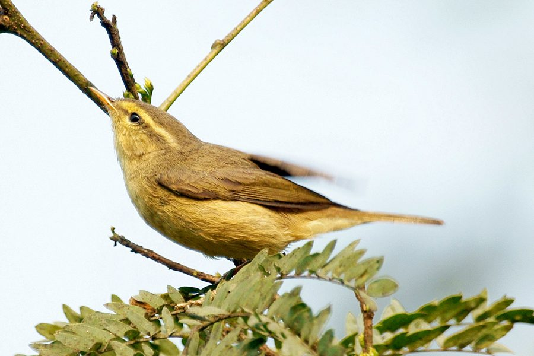

टिकेल्स लीफ़ वार्बलरTickell's Leaf Warbler
Phylloscopus affinis · Phylloscopidae · BRD-0229

- Scientific name वैज्ञानिक नाम
- Phylloscopus affinis (Hodgson, 1844)
- Family कुल
- Phylloscopidae
- Hindi हिंदी
- टिकेल्स लीफ़ वार्बलर
- Local names स्थानीय नाम
- tickells leaf warbler, warbler
- Status here यहाँ की स्थिति
- native
- Movement आवागमन
- Winter visitor
- Known from कहाँ दर्ज
- Others have published records from the Basti–Ayodhya districts बस्ती–अयोध्या के ज़िलों से दूसरों के प्रकाशित अभिलेख
- IUCN IUCN
- LC
- Review समीक्षा
- audited and independently read
When to look कब देखें
Winter visitor शीतकालीन प्रवासी. Expected mainly in October, November, December, January, February, March, April. मुख्यतः अक्टूबर, नवंबर, दिसंबर, जनवरी, फ़रवरी, मार्च, अप्रैल में अपेक्षित।
Arrives in October from breeding grounds in the Himalayas; departs by April. Expected in woodland edges and cultivated areas with scattered trees. Handbook of the Birds of India and Pakistan (Ali & Ripley 1968) documents winter distribution in the Gangetic plain. All migrants and visitors →
Tell it apart from इनसे अलग पहचानें
टिकेल्स लीफ़ वार्बलर / Tickell's Leaf Warbler
Phylloscopus affinis (Hodgson, 1844) — Phylloscopidae
टिकेल्स लीफ़ वार्बलर — सर्दियों में हिमालय से आने वाली बहुत छोटी और रंग में हल्की पक्षी, जो पेड़ों की पत्तियों में कीड़े खोजती है। इसकी पीले सिर की रेखा और हल्के रंग से इसे अन्य छोटी पक्षियों से अलग किया जा सकता है। यह अकेले या छोटे झुंड में रहती है।
Quick Identification त्वरित पहचान
| Feature | Description |
|---|---|
| Size | Small; 10–12 cm long |
| Overall colour | Olive-green above; white-buff below |
| Supercilium | Pale yellowish, prominent |
| Wing bars | Two faint yellowish bars on wings |
| Tail | Olive-green, narrow |
| Eyes | Dark; pale eye-ring |
| Behaviour | Active; flits through foliage picking insects |
| Voice | Soft, warbled song |
Field tip: A very small leaf warbler with pale yellowish supercilium (eyebrow stripe) and two faint wing bars. Olive-green above, whitish below. Active forager, constantly moving through foliage. Often feeds in the company of other small warblers and flycatchers in loose, mixed feeding flocks.
हिंदी — कैसे पहचानें:
बहुत छोटी; पीली भौंह की रेखा।
पेड़ों की पत्तियों में कीड़े खोजती है।
हल्के रंग की; पंखों पर दो पीली लकीरें।
अकसर अकेली या छोटे झुंड में।
Morphology आकारिकी
Biometrics:
| Measurement | Range |
|---|---|
| Total length | 100–120 mm |
| Wing (flattened chord) | 53–59 mm |
| Tail | 38–44 mm |
| Bill | 9–11 mm |
| Tarsus | 15–17 mm |
| Weight | 7–10 g |
Size: 10–12 cm long; wingspan 15–17 cm. One of the smallest warblers in the region.
Plumage: Olive-green or greenish-brown above. Rump slightly brighter. Wings darker with two yellowish bars on wing coverts (not always prominent). Tail olive-green, relatively short. Underparts whitish or buff, sometimes with greenish-yellow tint on flanks. Throat pale.
Head: Olive-green crown. Pale yellowish supercilium (eyebrow stripe), prominent and reaching back to nape. Loral area pale yellow. Ear coverts greenish-brown.
Eyes: Dark brown; pale narrow eye-ring.
Bill: Short, slender, pointed; adapted for gleaning tiny insects from foliage. Dark above, pale below.
Legs: Pale olive-brown or greenish.
Sexes: Similar; no obvious sexual dimorphism.
Juveniles: Slightly brighter yellow-green overall; supercilium more prominent.
Vocalisations. Call repertoire:
- Song: A soft, warbled series of notes, often given from concealment in foliage; not often heard in wintering grounds.
- Contact call: A soft tsip or tik, given when flocking with other species.
- Alarm call: A slightly harsher churr when disturbed.
हिंदी: नर्म सीटी जैसी आवाज़। "टिप टिप" की कॉल। डर जाने पर "चुर" की आवाज़।
Behaviour & Ecology व्यवहार और पारिस्थितिकता
Foraging: Actively gleans small insects from foliage. Feeds primarily on:
- Small insect larvae
- Tiny flies and gnats
- Small spiders and spider eggs
- Occasionally: small seeds and buds
Feeding technique: Picks through foliage with rapid, jerky movements; sometimes hangs from leaves to reach undersides.
Social behaviour: Solitary but often joins mixed-species feeding flocks with other small warblers, flycatchers, and babblers. These flocks are particularly common in winter and aid in predator detection.
Habitat preference: Woodland edges, cultivated areas with scattered trees, gardens, and scrubland. Avoids dense forest.
Activity: Diurnal; most active in early morning and late afternoon.
Predators: Small snakes, cat, occasionally small raptors.
हिंदी: पत्तियों से कीड़े निकाल कर खाती है। अन्य पक्षियों के साथ झुंड में रहती है। पेड़ों के बीच तेजी से चलती है।
Life Cycle / Phenology जीवन चक्र
Winter visitor: Absent during breeding season (April–August); returns to eastern UP from September–October and remains through March or April.
Arrival and departure: First birds arrive in late September; numbers peak in November–February; departure begins in March.
Breeding grounds: Breeding range in the Himalayas from Kashmir to Arunachal Pradesh; does not breed in the plains.
Roosts: Nocturnal roosts in foliage of trees and bushes.
Moult: Prebasic moult occurs before autumn migration.
हिंदी: सितंबर में आता है, अप्रैल तक रहता है। हिमालय में प्रजनन करता है।
Host Plants or Prey आहार
| Food Type | Examples | Feeding Behaviour |
|---|---|---|
| Insect larvae | Small caterpillars, dipteran larvae | Glean from foliage; pick from undersides of leaves |
| Small flies | Gnats, small flies | Snap from air or pick from foliage |
| Small spiders | Spider eggs and young spiders | Carefully extract from webs; eat eggs |
| Buds and seeds | Small fruit buds, tiny seeds | Occasionally; supplementary food |
हिंदी: छोटे कीड़े, लार्वे और मकड़ियाँ खाती है। पत्तियों के नीचे से कीड़े निकालती है।
Predators / Natural Enemies शत्रु
- Avian predators: Shrike species, sparrowhawks, small eagles.
- Reptilian predators: Small snakes.
- Mammalian predators: Cats, occasionally foxes.
हिंदी: शिकारी पक्षी, सांप और बिल्लियाँ इसका शिकार कर सकते हैं।
Agricultural / Human Relevance कृषि प्रासंगिकता
Protected status: Protected under the Wildlife (Protection) Act 1972.
Ecological role: Insectivorous warbler that helps control small insect populations in gardens and agricultural areas.
Cultural significance: Featured in ornithological literature; valued by birdwatchers for its presence in mixed feeding flocks.
हिंदी: यह विधि अधिनियम 1972 के अंतर्गत संरक्षित है।
Expected Locally स्थानीय रूप से अपेक्षित
Not a field record. Written from published accounts for eastern Uttar Pradesh. No confirmed local sighting yet — if you have seen it, that is what the atlas needs.
अभी तक स्थानीय पुष्टि नहीं। यह विवरण प्रकाशित स्रोतों से है, किसी अवलोकन से नहीं।
This species is NOT a field record. The distribution below is based on published sources describing where this warbler should be looked for in eastern UP.
Winter range: Expected in eastern Uttar Pradesh from October to April, particularly in areas with scattered trees, gardens, and woodland edges where mixed feeding flocks occur.
Habitat preference: Cultivated areas with patches of trees; gardens; forest edges.
Published records: GBIF holds published records from these districts.
What a first record would be: A dated photograph or detailed sighting in a specific location (with GPS coordinates and date) submitted through the About page.
हिंदी: यह पक्षी स्थानीय रूप से अपेक्षित है। बागों और पेड़ों में ढूंढें।
Distribution वितरण
Global range: Breeds in the Himalayas; winters across the Indian subcontinent. Monotypic.
In India: Occurs as a winter visitor throughout the subcontinent; particularly common in the Gangetic region.
In Uttar Pradesh: Occurs as a winter visitor across the state.
In Basti district / eastern UP: Regular winter visitor in suitable habitat.
Research Questions शोध प्रश्न
- What is the composition and stability of mixed-species feeding flocks involving Tickell's Leaf Warbler in eastern UP?
- How does diet vary seasonally during the winter stay?
- क्या इस गायक की संख्या में वर्षो दर वर्ष कोई अंतर होता है?
- What factors influence the timing of arrival and departure from wintering grounds?
- Can individual birds be identified and tracked within a season using capture-recapture methods?
- क्या खाद्य पदार्थों की कमी इसके वजन और स्वास्थ्य को प्रभावित करती है?
Similar Species मिलती-जुलती प्रजातियाँ
| Species | Key Difference | Hindi | Field Rule | |
|---|---|---|---|---|
| [[common_chiffchaff\ | Common Chiffchaff]] (Phylloscopus collybita) | Slightly larger (11–12 cm); darker above; more pronounced supercilium | समान्य चिफचाफ | Chiffchaff is slightly darker and slightly larger. |
| Hume's Warbler (Phylloscopus humei) | Smaller; greyish-green; less prominent wing bars | ह्यूम की कोकिल | Hume's is generally more grey-toned above. | |
| Tickell's Warbler is best identified by the combination of small size, pale yellowish supercilium, and two yellowish wing bars. |
Field rule: Very small warbler with a pale yellowish supercilium and two faint wing bars on a greenish wing. Consult detailed guides for separation from similar Phylloscopus warblers.
Taxonomy & Classification वर्गीकरण
Original description. Described by Brian Hodgson in 1844 from Himalayan specimens.
Subspecies. Monotypic.
Family and order placement. Order Passeriformes; family Phylloscopidae (leaf warblers). The genus Phylloscopus contains small, cryptic warblers mostly distributed in Asia.
IUCN status rationale. Least Concern (LC). Widely distributed and populations stable.
हिंदी: यह कोकिल विश्व में पाई जाती है। भारत में अभी सुरक्षित है।
Photo Gallery फोटो गैलरी
No photos yet — add field photos to media/species/tickells_leaf_warbler/ and run node scripts/sync_photos.js.
Wanted photos:
- Adult in non-breeding plumage
- Showing supercilium and wing bars
- Foraging in foliage
- In mixed feeding flock
- Head detail
References संदर्भ
- Hodgson, B. H. (1844). Description of species of Indian Sylvia and Motacilla. Calcutta Journal of Natural History 4: 273–286.
- Ali, S. & Ripley, S. D. (1972). Handbook of the Birds of India and Pakistan. Vol. 7 (Warblers to Redstarts). Oxford University Press, Delhi.
- Cramp, S. (1992). Handbook of the Birds of Europe, the Middle East and North Africa: The Birds of the Western Palearctic. Vol. 6 (Warblers). Oxford University Press.
- Grimmett, R., Inskipp, C. & Inskipp, T. (2011). Birds of the Indian Subcontinent. 2nd edition. Oxford University Press, New Delhi. Pp. 388.
- GBIF Occurrence Data — Phylloscopus affinis, India.
- IUCN Red List (2024). Phylloscopus affinis — BirdLife International assessment. Status: Least Concern.
Source file: species/fauna/birds/tickells_leaf_warbler.md